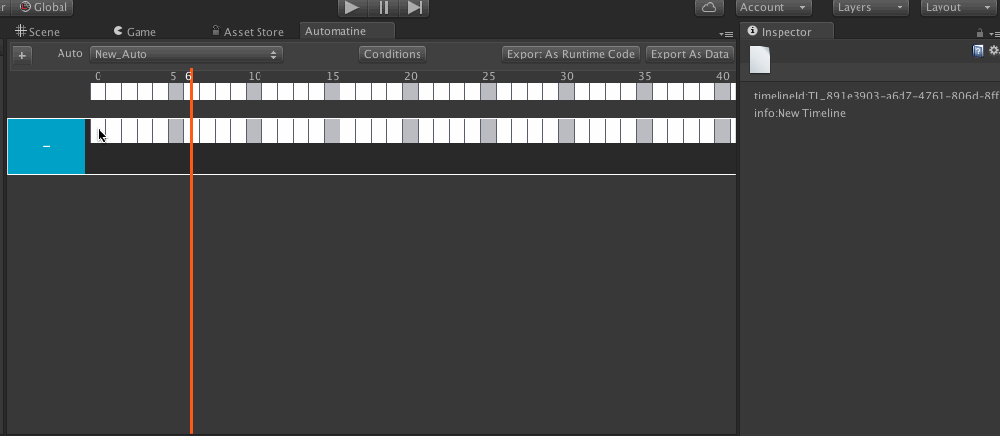
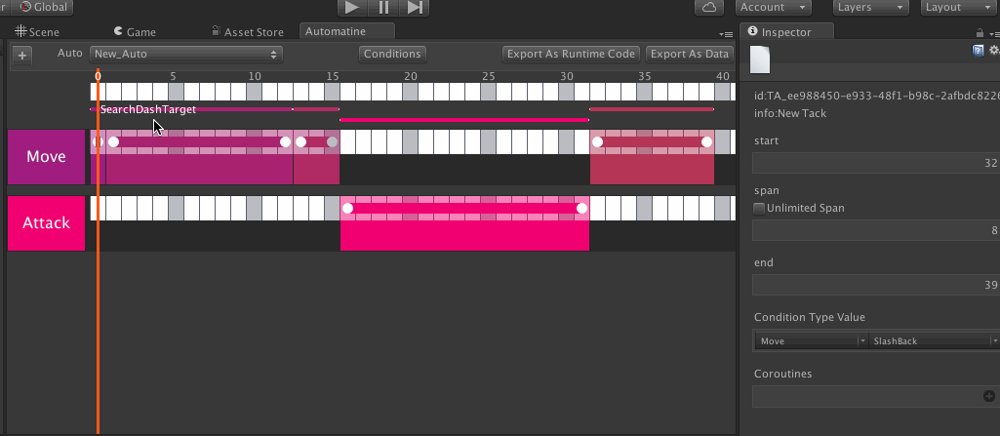
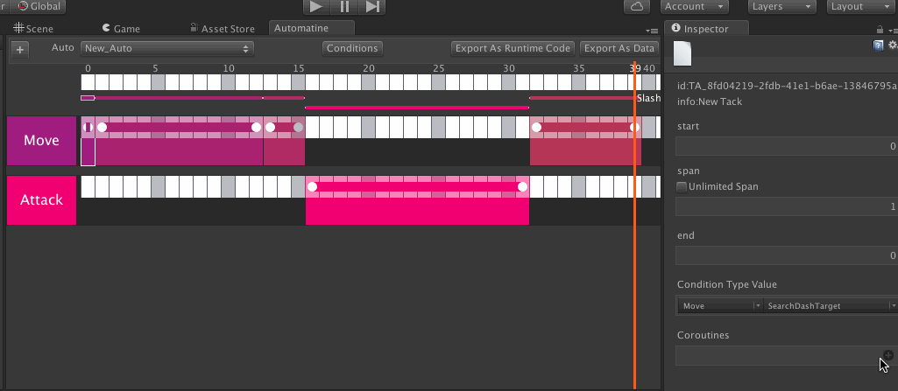

How to use Automatine (、、、英語だな、、、)
概要
月が英語読めてよかったですね。古い。
AutomatineっていうC#で書かれたタイムラインアクション編集ツールを作ってて、
いい感じのとこまで来たので x生贄 oテストユーザ を募集するつもり。
こんな感じのアレです。

試してみたい人は自分のTwitterとかまで連絡してね。
簡単に言うと何
「ボタン一発押したら一番近い敵の方に走って行ってダッシュ斬り、その後もといた位置まで復帰」
みたいなのを次のような画面でセット、編集できるようになるツールと実行コード生成器。

こういうのコード上で組むと死にたくなるよね。
次のは、Timeline上の点にコード(Coroutine)を配置する様子。

機能
・タイムライン編集で適当に行動を配置
・状態の定義、実行時に取得、判定
・Coroutine配置して実行
・他
試してみたい人は自分のTwitterとかまで連絡してね(二度目)